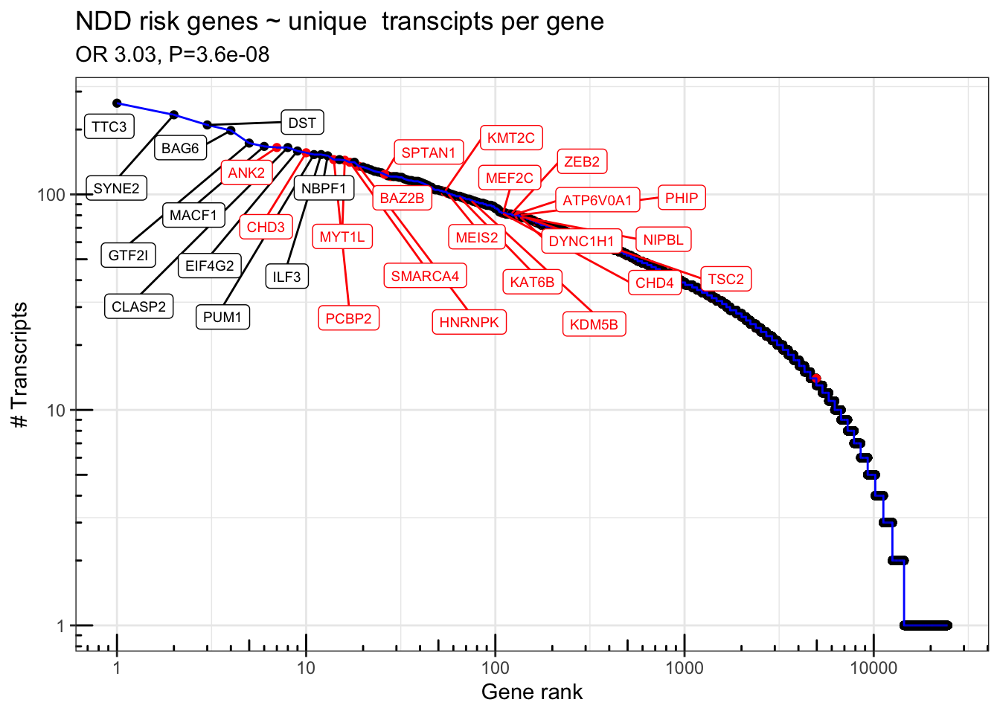

suppressPackageStartupMessages({
library(IsoformSwitchAnalyzeR)
library(rtracklayer)
library(ggrepel)
library(scales)
library(GenomicFeatures)
library(DescTools)
library(tidyverse)
library(magrittr)
})
colorVector = c(
"Known" = "#009E73",
"ISM" = "#0072B2",
"ISM_Prefix" = "#005996",
"ISM_Suffix" = "#378bcc",
"NIC" = "#D55E00",
"NNC" = "#E69F00",
"Other" = "#000000"
)
colorVector_ismSplit = colorVector[-2]Figure 1 - BulkTxomeAnalysis
Load Data
if(!file.exists("data/working/bulkTxome.Rdata")) {
talon_gtf = rtracklayer::import("data/cp_vz_0.75_min_7_recovery_talon.gtf.gz")
tx.isoseq = talon_gtf %>% as_tibble() %>% filter(type == "transcript")
sqanti_gtf = rtracklayer::import("data/sqanti/cp_vz_0.75_min_7_recovery_talon_corrected.gtf.cds.gtf.gz")
tx.sqanti = sqanti_gtf %>% as_tibble() %>% filter(type == "transcript")
gencode_gtf = rtracklayer::import("ref/gencode.v33lift37.annotation.gtf.gz")
tx.gencode = gencode_gtf %>% as_tibble() %>% filter(type == "transcript")
txdb.gencode = makeTxDbFromGRanges(gencode_gtf)
gencodelengths= transcriptLengths(txdb.gencode)
txdb.isoseq = makeTxDbFromGRanges(talon_gtf)
isoSeqLengths = transcriptLengths(txdb.isoseq)
samps = tribble(
~sample_id, ~condition,
"VZ_209", "VZ",
"VZ_334", "VZ",
"VZ_336", "VZ",
"CP_209", "CP",
"CP_334", "CP",
"CP_336", "CP"
) %>%
dplyr::mutate(
dplyr::across(condition, as_factor)
)
cts = read_table("data/cp_vz_0.75_min_7_recovery_talon_abundance_filtered.tsv.gz")
cts.collapse = cts %>%
mutate(
VZ_209 = rowSums(across(matches("209_.*_VZ"))),
VZ_334 = rowSums(across(matches("334_.*_VZ"))),
VZ_336 = rowSums(across(matches("336_.*_VZ"))),
CP_209 = rowSums(across(matches("209_.*_CP"))),
CP_334 = rowSums(across(matches("334_.*_CP"))),
CP_336 = rowSums(across(matches("336_.*_CP"))),
.keep = "unused"
) %>%
dplyr::select(!c("gene_ID", "transcript_ID", "annot_transcript_name")) %>%
dplyr::rename(
gene_id = "annot_gene_id",
transcript_id = "annot_transcript_id",
gene_name = "annot_gene_name"
) %>%
mutate(
gene_novelty = as.factor(gene_novelty),
transcript_novelty = as.factor(transcript_novelty),
ISM_subtype = ISM_subtype %>% na_if("None") %>% as.factor()
)
cts$counts = rowSums(as.matrix(cts.collapse[,9:14]))
cts$novelty2 = as.character(cts$transcript_novelty)
cts$novelty2[which(cts$novelty2=="ISM" & cts$ISM_subtype=="Prefix")] = "ISM_Prefix"
cts$novelty2[which(cts$novelty2=="ISM" & cts$ISM_subtype=="Suffix")] = "ISM_Suffix"
cts$novelty2[cts$novelty2 %in% c("Antisense", "Genomic", "Intergenic", "ISM")] = "Other"
cts$novelty2 = factor(cts$novelty2,levels=c("Known", "ISM_Prefix", "ISM_Suffix", "NIC", "NNC", "Other"))
TableS1 = tx.isoseq %>% dplyr::select(gene_id, transcript_id, gene_name, transcript_name, seqnames, start, end, strand, transcript_length=width, source, gene_status, gene_type, transcript_status,transcript_type, havana_transcript, ccdsid, protein_id)
TableS1 = TableS1 %>% left_join(cts %>% dplyr::select(transcript_id=annot_transcript_id, transcript_novelty, ISM_subtype, transcript_novelty2 = novelty2, n_exons, cds_length = length, expression_counts = counts))
TableS1$expression_TPM = TableS1$expression_counts / (sum(TableS1$expression_counts / 1000000))
write_tsv(TableS1, file="output/tables/TableS1_transcript_annotation.tsv")
save.image("data/working/bulkTxome.Rdata")
} else {
load("data/working/bulkTxome.Rdata")
}Warning in .get_cds_IDX(mcols0$type, mcols0$phase): The "phase" metadata column contains non-NA values for features of type
stop_codon. This information was ignored.Warning in .reject_transcripts(bad_tx, because): The following transcripts were dropped because they have incompatible
CDS and stop codons: ENST00000422803.2_2, ENST00000618549.1_2,
ENST00000619291.4_2, ENST00000621077.1_2, ENST00000621229.1_2,
ENST00000631326.2_2
── Column specification ────────────────────────────────────────────────────────
cols(
.default = col_double(),
annot_gene_id = col_character(),
annot_transcript_id = col_character(),
annot_gene_name = col_character(),
annot_transcript_name = col_character(),
gene_novelty = col_character(),
transcript_novelty = col_character(),
ISM_subtype = col_character()
)
ℹ Use `spec()` for the full column specifications.Joining, by = "transcript_id"Technical and Biological Replicates
Fig1B: Isoform level MDS
##
length(unique(cts$annot_transcript_id)) #214516 total isoforms[1] 214516length(unique(cts$annot_gene_id)) #24554 genes[1] 24554## Collapsing across technical replicates
countMat = as.matrix(cts.collapse[,9:14])
cs = colSums(countMat) / 1000000 ## TPM normalize
countMat.tpm = t(apply(countMat, 1, function(x) { x / cs}))
table(rowSums(countMat.tpm > 0.1) >3) ## 175730 isoforms @ TPM > 0.1 in half of samples
FALSE TRUE
38786 175730 table(rowSums(countMat.tpm > 1) >3) ## 58102 @ TPM > 1 in half of samples
FALSE TRUE
156414 58102 expressedIsoforms = rowSums(countMat.tpm > .1) >3 ## TPM > .1 in half of samples
length(unique(cts$annot_gene_id[expressedIsoforms])) ## 17,299 genes with expressed isoforms (TPM > .1)[1] 17299# Analyze technical replicates separately
cts.all = cts[,12:35]
cs = colSums(cts.all) / 1000000
cts.all.tpm = t(apply(cts.all, 1, function(x) { x / cs}))
mds = cmdscale(dist(t(log2(.1+cts.all.tpm))),k = 4)
df = data.frame(sample=rownames(mds), PC1 = mds[,1], PC2=mds[,2], PC3=mds[,3], PC4=mds[,4])
df$Region = substr(df$sample, 7,9)
df$Subject = substr(df$sample, 1,3)
df$batch = substr(df$sample, 5,5)
Fig1B=ggplot(df, aes(x=PC1,y=PC2, color=Region, shape=Subject,label=batch)) + geom_point(size=4) + geom_text(color='black', size=2) + theme_bw() + ggtitle("Isoform level clustering")
Fig1Bggsave(Fig1B,filename = "output/figures/Fig1/Fig1B.pdf", width = 3.5,height=2)Fig1C: smoothscatter
geneCountMap.tpm = tibble(gene = cts$annot_gene_name, as_tibble(cts.all.tpm)) %>% group_by(gene) %>% summarise(across(everything(), sum))
mds = cmdscale(dist(t(log2(.1+geneCountMap.tpm %>% dplyr::select(-gene)))),k = 4)
df = data.frame(sample=rownames(mds), PC1 = mds[,1], PC2=mds[,2], PC3=mds[,3], PC4=mds[,4])
df$Region = substr(df$sample, 7,9)
df$Subject = substr(df$sample, 1,3)
df$TechnicalReplicate = substr(df$sample, 5,5)
#ggplot(df, aes(x=PC1,y=PC2, color=Region, shape=Subject)) + geom_point(size=3) + theme_bw() + ggtitle("Gene level clustering")
Fig1C=ggplot(as.data.frame(countMat.tpm), aes(x=log2(1+VZ_334), y=log2(1+VZ_336))) + geom_point(color='blue',size=.4,alpha=.5) + theme_bw() + geom_abline(slope=1,lty=2) + geom_smooth(method='lm',color='black') + ggtitle("R=0.93, p<2e-16")
Fig1C`geom_smooth()` using formula 'y ~ x'ggsave(Fig1C ,filename = "output/figures/Fig1/Fig1C.pdf", width = 3,height=3)`geom_smooth()` using formula 'y ~ x'pdf(file= "output/figures/Fig1/Fig1Cb.pdf", width = 4, height=4)
smoothScatter(log2(1+countMat.tpm[,"VZ_334"]), log2(1+countMat.tpm[,"VZ_336"]))
dev.off()quartz_off_screen
2 smoothScatter(log2(1+countMat.tpm[,"VZ_334"]), log2(1+countMat.tpm[,"VZ_336"]))panel.cor <- function(x, y, digits = 2, prefix = "R=", cex.cor, ...)
{
usr <- par("usr"); on.exit(par(usr))
par(usr = c(0, 1, 0, 1))
r <- abs(cor(x, y))
txt <- format(c(r, 0.123456789), digits = digits)[1]
txt <- paste0(prefix, txt)
if(missing(cex.cor)) cex.cor <- 0.8/strwidth(txt)
text(0.5, 0.5, txt, cex =1)
}
pdf(file="output/figures/supplement/FigS2_bio_replicates.pdf", width=8,height=6)
pairs(log2(1+countMat.tpm), panel=function(x,y){smoothScatter(x,y,add=T)},upper.panel = panel.cor)
dev.off()quartz_off_screen
2 Fig1E: tx novelty
Fig1E = ggplot(cts %>% filter(counts>10,), aes(x=counts, fill=novelty2)) + geom_histogram(position=position_fill(),alpha=.75, binwidth = .3)+ theme_bw() + scale_x_log10()+
annotation_logticks(scaled = T,sides='b')+ theme(panel.grid.minor = element_blank()) + labs(x="Min observed counts", y="Proportion of transcripts") + ggtitle("Transcript novelty & type") + theme(plot.title = element_text(hjust=.5)) + scale_fill_manual(values=colorVector_ismSplit)
Fig1Eggsave(file="output/figures/Fig1/Fig1E.pdf",width=5,height=3)
## Removing MAP1B
ggplot(cts %>% filter(counts>10,annot_gene_name!="MAP1B"), aes(x=counts, fill=novelty2)) + geom_histogram(position=position_fill(),alpha=.5, binwidth = .3)+ theme_bw() + scale_x_log10()+
annotation_logticks(scaled = T,sides='b')+ theme(panel.grid.minor = element_blank()) + labs(x="Min observed counts", y="Proportion of transcripts") + ggtitle("Transcript novelty & type",subtitle = '(MAP1B removed)') + theme(plot.title = element_text(hjust=.5)) + scale_fill_manual(values=colorVector_ismSplit)Analyses of Transcript Length
Fig1F: Tx Length Histogra
df<- cts%>% dplyr::select("annot_transcript_id", "transcript_novelty", "ISM_subtype", "annot_gene_name", "counts") %>% right_join(isoSeqLengths, by=c("annot_transcript_id" = "tx_name"))
df$novelty2 = as.character(df$transcript_novelty)
df$novelty2[which(df$novelty2=="ISM" & df$ISM_subtype=="Prefix")] = "ISM_Prefix"
df$novelty2[which(df$novelty2=="ISM" & df$ISM_subtype=="Suffix")] = "ISM_Suffix"
df$novelty2[df$novelty2 %in% c("Antisense", "Genomic", "Intergenic", "ISM")] = "Other"
df$novelty2 = factor(df$novelty2,levels=c("Known", "ISM_Prefix", "ISM_Suffix", "NIC", "NNC", "Other"))
df %>% filter(tx_len > 900, tx_len < 6000) %>% group_by(novelty2) %>% summarise(peak=10^mean(log10(tx_len)), median(tx_len), mean(tx_len))# A tibble: 6 × 4
novelty2 peak `median(tx_len)` `mean(tx_len)`
<fct> <dbl> <dbl> <dbl>
1 Known 2305. 2317 2588.
2 ISM_Prefix 2604. 2701 2809.
3 ISM_Suffix 2833. 2914 3019.
4 NIC 3023. 3100 3193.
5 NNC 2867. 2953 3033.
6 Other 2616. 2716 2807.Fig1F = ggplot(df, aes(x=tx_len, fill=novelty2)) + geom_histogram(alpha=.75,binwidth = .03)+
theme_bw() + scale_fill_manual(values=colorVector_ismSplit) +
scale_x_continuous(trans = log10_trans(),breaks = trans_breaks("log10", function(x) 10^x),
labels = trans_format("log10", math_format(10^.x)),limits = c(50,10^5)) + annotation_logticks() +
labs(x="Transcript Length (bp)") + ggtitle("Transcript length distribution")
Fig1FWarning: Removed 6 rows containing non-finite values (stat_bin).Warning: Removed 12 rows containing missing values (geom_bar).ggsave(Fig1F,file='output/figures/Fig1/Fig1F.pdf', width=5,height=2.5)Warning: Removed 6 rows containing non-finite values (stat_bin).
Removed 12 rows containing missing values (geom_bar).## Zoomed in
ggplot(df, aes(x=tx_len, fill=novelty2)) + geom_histogram(alpha=.5,binwidth = 100)+
theme_bw() + scale_fill_manual(values=colorVector_ismSplit) + xlim(800,5500) +
labs(x="Transcript Length (bp)") + ggtitle("Transcript length distribution") +
geom_vline(xintercept = 2588, lty=2,color="#009E73")Warning: Removed 27594 rows containing non-finite values (stat_bin).
Removed 12 rows containing missing values (geom_bar).mean(df$tx_len[df$novelty2=="Known"])[1] 2276.283sd(df$tx_len[df$novelty2=="Known"])[1] 2224.66mean(df$tx_len[df$novelty2!="Known"])[1] 3072.309sd(df$tx_len[df$novelty2!="Known"])[1] 1168.997## Linear model: Known is the intercept
summary(lm(log2(tx_len) ~ novelty2,data=df[df$tx_len > 1000,]))
Call:
lm(formula = log2(tx_len) ~ novelty2, data = df[df$tx_len > 1000,
])
Residuals:
Min 1Q Median 3Q Max
-1.6246 -0.3952 0.0137 0.3949 6.2778
Coefficients:
Estimate Std. Error t value Pr(>|t|)
(Intercept) 11.367558 0.002874 3955.796 < 2e-16 ***
novelty2ISM_Prefix 0.016804 0.005031 3.341 0.000836 ***
novelty2ISM_Suffix 0.126745 0.003850 32.923 < 2e-16 ***
novelty2NIC 0.224224 0.003922 57.172 < 2e-16 ***
novelty2NNC 0.137284 0.005755 23.855 < 2e-16 ***
novelty2Other 0.012843 0.008076 1.590 0.111768
---
Signif. codes: 0 '***' 0.001 '**' 0.01 '*' 0.05 '.' 0.1 ' ' 1
Residual standard error: 0.5991 on 190337 degrees of freedom
Multiple R-squared: 0.0208, Adjusted R-squared: 0.02078
F-statistic: 808.7 on 5 and 190337 DF, p-value: < 2.2e-16summary(lm(log2(tx_len) ~ novelty2=="Known",data=df))
Call:
lm(formula = log2(tx_len) ~ novelty2 == "Known", data = df)
Residuals:
Min 1Q Median 3Q Max
-5.5655 -0.4458 0.0731 0.5117 7.0423
Coefficients:
Estimate Std. Error t value Pr(>|t|)
(Intercept) 11.472348 0.002319 4948.1 <2e-16 ***
novelty2 == "Known"TRUE -0.869348 0.004212 -206.4 <2e-16 ***
---
Signif. codes: 0 '***' 0.001 '**' 0.01 '*' 0.05 '.' 0.1 ' ' 1
Residual standard error: 0.8965 on 214514 degrees of freedom
Multiple R-squared: 0.1657, Adjusted R-squared: 0.1657
F-statistic: 4.26e+04 on 1 and 214514 DF, p-value: < 2.2e-16## Non-parametric test
kruskal.test((tx_len) ~ novelty2=="Known",data=df)
Kruskal-Wallis rank sum test
data: (tx_len) by novelty2 == "Known"
Kruskal-Wallis chi-squared = 23404, df = 1, p-value < 2.2e-16kruskal.test(log2(tx_len) ~ novelty2,data=df[df$tx_len > 1000,])
Kruskal-Wallis rank sum test
data: log2(tx_len) by novelty2
Kruskal-Wallis chi-squared = 4511.4, df = 5, p-value < 2.2e-16DescTools::DunnTest(log2(tx_len) ~ novelty2, data=df[df$tx_len > 1000,], method='bonferroni')
Dunn's test of multiple comparisons using rank sums : bonferroni
mean.rank.diff pval
ISM_Prefix-Known 3089.5845 3.2e-10 ***
ISM_Suffix-Known 13024.1853 < 2e-16 ***
NIC-Known 22131.1682 < 2e-16 ***
NNC-Known 13892.0679 < 2e-16 ***
Other-Known 2480.9445 0.0121 *
ISM_Suffix-ISM_Prefix 9934.6008 < 2e-16 ***
NIC-ISM_Prefix 19041.5837 < 2e-16 ***
NNC-ISM_Prefix 10802.4834 < 2e-16 ***
Other-ISM_Prefix -608.6399 1.0000
NIC-ISM_Suffix 9106.9829 < 2e-16 ***
NNC-ISM_Suffix 867.8826 1.0000
Other-ISM_Suffix -10543.2407 < 2e-16 ***
NNC-NIC -8239.1003 < 2e-16 ***
Other-NIC -19650.2236 < 2e-16 ***
Other-NNC -11411.1233 < 2e-16 ***
---
Signif. codes: 0 '***' 0.001 '**' 0.01 '*' 0.05 '.' 0.1 ' ' 1## Boxplot
# ggplot(df, aes(x=novelty2, y=tx_len, fill=novelty2)) + geom_boxplot()+
# theme_bw() + scale_fill_manual(values=colorVector_ismSplit) +
# scale_y_continuous(trans = log10_trans(),breaks = trans_breaks("log10", function(x) 10^x),
# labels = trans_format("log10", math_format(10^.x)))Fig1G: # Exons / gene
Fig1G = ggplot(df, aes(x=nexon, fill=novelty2)) + geom_histogram(alpha=.75, binwidth = 1) + theme_bw() +
xlim(1,40) + scale_fill_manual(values=colorVector_ismSplit) + labs(x="# Exons", y="# Transcripts") + ggtitle('Exons per Transcript') + theme(legend.position = "none")
Fig1GWarning: Removed 597 rows containing non-finite values (stat_bin).Warning: Removed 12 rows containing missing values (geom_bar).ggsave(Fig1G,file='output/figures/Fig1/Fig1G.pdf', width=3,height=2.5)Warning: Removed 597 rows containing non-finite values (stat_bin).
Removed 12 rows containing missing values (geom_bar).df %>% group_by(novelty2) %>% dplyr::select(nexon) %>% summarise(median(nexon), mean(nexon), sd(nexon), quantile(nexon, .05), quantile(nexon,.95))Adding missing grouping variables: `novelty2`# A tibble: 6 × 6
novelty2 `median(nexon)` `mean(nexon)` `sd(nexon)` quantile(nexon,…¹ quant…²
<fct> <dbl> <dbl> <dbl> <dbl> <dbl>
1 Known 5 7.16 6.88 1 21
2 ISM_Prefix 8 10.1 6.99 2 23
3 ISM_Suffix 8 10.1 7.01 2 24
4 NIC 12 13.2 7.31 4 27
5 NNC 9 10.3 6.80 2 23
6 Other 5 7.30 6.24 2 20
# … with abbreviated variable names ¹`quantile(nexon, 0.05)`,
# ²`quantile(nexon, 0.95)`df %>% group_by(novelty2=="Known") %>% dplyr::select(nexon) %>% summarise(median(nexon), mean(nexon), sd(nexon), quantile(nexon, .05), quantile(nexon,.95))Adding missing grouping variables: `novelty2 == "Known"`# A tibble: 2 × 6
`novelty2 == "Known"` `median(nexon)` `mean(nexon)` sd(nexon…¹ quant…² quant…³
<lgl> <dbl> <dbl> <dbl> <dbl> <dbl>
1 FALSE 10 11.0 7.25 2 25
2 TRUE 5 7.16 6.88 1 21
# … with abbreviated variable names ¹`sd(nexon)`, ²`quantile(nexon, 0.05)`,
# ³`quantile(nexon, 0.95)`# Linear model (known is intercept)
summary(lm(log2(df$nexon) ~ df$novelty2))
Call:
lm(formula = log2(df$nexon) ~ df$novelty2)
Residuals:
Min 1Q Median 3Q Max
-2.4927 -0.6853 0.0657 0.8222 4.0657
Coefficients:
Estimate Std. Error t value Pr(>|t|)
(Intercept) 2.256270 0.004331 520.977 <2e-16 ***
df$novelty2ISM_Prefix 0.720984 0.008605 83.788 <2e-16 ***
df$novelty2ISM_Suffix 0.728883 0.006378 114.275 <2e-16 ***
df$novelty2NIC 1.236409 0.006545 188.897 <2e-16 ***
df$novelty2NNC 0.776082 0.010123 76.663 <2e-16 ***
df$novelty2Other 0.127124 0.014200 8.952 <2e-16 ***
---
Signif. codes: 0 '***' 0.001 '**' 0.01 '*' 0.05 '.' 0.1 ' ' 1
Residual standard error: 1.104 on 214510 degrees of freedom
Multiple R-squared: 0.1525, Adjusted R-squared: 0.1525
F-statistic: 7720 on 5 and 214510 DF, p-value: < 2.2e-16## Non-parametric test
kruskal.test(log2(df$nexon) ~ as.factor(df$novelty2))
Kruskal-Wallis rank sum test
data: log2(df$nexon) by as.factor(df$novelty2)
Kruskal-Wallis chi-squared = 29541, df = 5, p-value < 2.2e-16kruskal.test(log2(df$nexon) ~ as.factor(df$novelty2=="Known"))
Kruskal-Wallis rank sum test
data: log2(df$nexon) by as.factor(df$novelty2 == "Known")
Kruskal-Wallis chi-squared = 20319, df = 1, p-value < 2.2e-16kruskal.test((df$nexon) ~ as.factor(df$novelty2=="Known"))
Kruskal-Wallis rank sum test
data: (df$nexon) by as.factor(df$novelty2 == "Known")
Kruskal-Wallis chi-squared = 20319, df = 1, p-value < 2.2e-16DescTools::DunnTest(log2(df$nexon) ~ as.factor(df$novelty2),method='bonferroni')
Dunn's test of multiple comparisons using rank sums : bonferroni
mean.rank.diff pval
ISM_Prefix-Known 32693.6946 < 2e-16 ***
ISM_Suffix-Known 33127.7388 < 2e-16 ***
NIC-Known 61043.3188 < 2e-16 ***
NNC-Known 35434.2011 < 2e-16 ***
Other-Known 3206.1675 0.00083 ***
ISM_Suffix-ISM_Prefix 434.0442 1.00000
NIC-ISM_Prefix 28349.6241 < 2e-16 ***
NNC-ISM_Prefix 2740.5065 0.00050 ***
Other-ISM_Prefix -29487.5271 < 2e-16 ***
NIC-ISM_Suffix 27915.5799 < 2e-16 ***
NNC-ISM_Suffix 2306.4623 0.00092 ***
Other-ISM_Suffix -29921.5713 < 2e-16 ***
NNC-NIC -25609.1177 < 2e-16 ***
Other-NIC -57837.1512 < 2e-16 ***
Other-NNC -32228.0336 < 2e-16 ***
---
Signif. codes: 0 '***' 0.001 '**' 0.01 '*' 0.05 '.' 0.1 ' ' 1Analyses of transcripts per gene & disease
NDD risk genes ~ unique transcipts per gene
risk_genes =read.csv("ref/ASD+SCZ+DDD_2022.csv")
pLI_scores = read.table('ref/pLI_scores.ensid.txt',header = T)
asd_genes = risk_genes$Gene[risk_genes$Set=="ASD (SFARI score 1)"]
ddd_genes = risk_genes$Gene[risk_genes$Set=="DDD (Kaplanis et al. 2019)"]
geneCounts = cts %>% group_by(gene_id=substr(annot_gene_id,1,15)) %>% summarise(gene_counts = sum(counts))
geneCounts$gene_counts = geneCounts$gene_counts / (sum(geneCounts$gene_counts) / 1000000)
df <- talon_gtf %>% as_tibble() %>%
mutate(gene_id = str_sub(gene_id, 1, 15)) %>%
group_by(gene_id) %>%
summarize(n_transcripts = n_distinct(na.omit(transcript_id)), n_exons = n_distinct(na.omit(exon_id))) %>%
ungroup()
df <-as_tibble(gencode_gtf) %>% dplyr::filter(type=="gene") %>% mutate(gene_id=substr(gene_id,0,15)) %>% right_join(df, by="gene_id")
df <- df %>% left_join(geneCounts) Joining, by = "gene_id"df <- pLI_scores %>% as_tibble() %>% dplyr::select(gene_id=gene, pLI) %>% right_join(df)Joining, by = "gene_id"df$gene_rank = rank(-df$n_transcripts, ties.method = 'first')
df$DDD = FALSE
df$DDD[df$gene_name %in% c(asd_genes, ddd_genes)] = TRUE
s=summary(glm(DDD ~ log10(n_transcripts) + log10(width) + log10(gene_counts), data=df %>% filter(gene_type == "protein_coding"), family='binomial'))
print(s)
Call:
glm(formula = DDD ~ log10(n_transcripts) + log10(width) + log10(gene_counts),
family = "binomial", data = df %>% filter(gene_type == "protein_coding"))
Deviance Residuals:
Min 1Q Median 3Q Max
-0.8652 -0.2530 -0.1708 -0.1059 3.5222
Coefficients:
Estimate Std. Error z value Pr(>|z|)
(Intercept) -10.2296 0.5162 -19.819 < 2e-16 ***
log10(n_transcripts) 1.1084 0.2013 5.507 3.64e-08 ***
log10(width) 1.0441 0.1057 9.882 < 2e-16 ***
log10(gene_counts) 0.3320 0.1161 2.859 0.00425 **
---
Signif. codes: 0 '***' 0.001 '**' 0.01 '*' 0.05 '.' 0.1 ' ' 1
(Dispersion parameter for binomial family taken to be 1)
Null deviance: 3522.0 on 15146 degrees of freedom
Residual deviance: 3145.4 on 15143 degrees of freedom
AIC: 3153.4
Number of Fisher Scoring iterations: 7exp(s$coefficients[,1]) (Intercept) log10(n_transcripts) log10(width)
3.608466e-05 3.029439e+00 2.840918e+00
log10(gene_counts)
1.393712e+00 Fig1H=ggplot(df, aes(x = gene_rank, y = n_transcripts,color=DDD)) +
geom_point() + geom_line(color='blue') +
geom_label_repel(data = df %>% filter(n_transcripts > 150 | (n_transcripts > 75 & DDD==TRUE)),aes(label = gene_name),force = 30, direction='both',nudge_y=-.1,nudge_x = .3, max.iter = 10000,max.overlaps = 50, size=2.5) + scale_color_manual(values=c("TRUE" = "red", "FALSE" = "black")) + scale_y_log10() + scale_x_log10() + theme_bw() + annotation_logticks() + theme(legend.position = 'none') + labs(x="Gene rank", y="# Transcripts") + ggtitle("NDD risk genes ~ unique transcipts per gene",subtitle=paste0("OR ",signif(exp(s$coefficients[2,1]),3),", P=", signif(s$coefficients[2,4],2)))
Fig1H
ggsave(file="output/figures/Fig1/Fig1H.pdf",Fig1H, width = 8, height=3)FigS3: NDD risk genes ~ unique NOVEL transcipts per gene
df.novel <- talon_gtf %>% as_tibble() %>% filter(type=="transcript", transcript_id %in% cts$annot_transcript_id[cts$novelty2!="Known"]) %>%
mutate(gene_id = str_sub(gene_id, 1, 15)) %>%
group_by(gene_id) %>%
summarize(n_transcripts = n_distinct(na.omit(transcript_id)), n_exons = n_distinct(na.omit(exon_id))) %>%
ungroup()
df.novel <- as_tibble(gencode_gtf) %>% dplyr::filter(type=="gene") %>% mutate(gene_id=substr(gene_id,0,15)) %>% right_join(df.novel, by="gene_id")
df.novel <- df.novel %>% left_join(geneCounts) Joining, by = "gene_id"df.novel$gene_rank = rank(-df.novel$n_transcripts, ties.method = 'first')
df.novel$DDD = FALSE
df.novel$DDD[df.novel$gene_name %in% c(asd_genes, ddd_genes)] = TRUE
s=summary(glm(DDD ~ log10(n_transcripts) + log10(width) + log10(gene_counts), data=df.novel %>% filter(gene_type == "protein_coding"), family='binomial'))
print(s)
Call:
glm(formula = DDD ~ log10(n_transcripts) + log10(width) + log10(gene_counts),
family = "binomial", data = df.novel %>% filter(gene_type ==
"protein_coding"))
Deviance Residuals:
Min 1Q Median 3Q Max
-0.7978 -0.2842 -0.2103 -0.1501 3.4149
Coefficients:
Estimate Std. Error z value Pr(>|z|)
(Intercept) -9.9549 0.5723 -17.394 < 2e-16 ***
log10(n_transcripts) 0.5682 0.1645 3.453 0.000554 ***
log10(width) 1.0640 0.1115 9.546 < 2e-16 ***
log10(gene_counts) 0.5614 0.1217 4.612 3.98e-06 ***
---
Signif. codes: 0 '***' 0.001 '**' 0.01 '*' 0.05 '.' 0.1 ' ' 1
(Dispersion parameter for binomial family taken to be 1)
Null deviance: 3142.7 on 11204 degrees of freedom
Residual deviance: 2904.9 on 11201 degrees of freedom
AIC: 2912.9
Number of Fisher Scoring iterations: 7sort(exp(s$coefficients[,1])) (Intercept) log10(gene_counts) log10(n_transcripts)
0.0000474938 1.7531245449 1.7651452731
log10(width)
2.8979142259 FigS3=ggplot(df.novel, aes(x = gene_rank, y = n_transcripts,color=DDD)) +
geom_point() + geom_line(color='blue') +
geom_label_repel(data = df.novel %>% filter(n_transcripts > 150 | (n_transcripts > 75 & DDD==TRUE)),aes(label = gene_name),force = 30, direction='both',nudge_y=-.1,nudge_x = .3, max.iter = 10000,max.overlaps = 50, size=2.5) + scale_color_manual(values=c("TRUE" = "red", "FALSE" = "black")) + scale_y_log10() + scale_x_log10() + theme_bw() + annotation_logticks() + theme(legend.position = 'none') + labs(x="Gene rank", y="# Transcripts") + ggtitle("NDD risk genes ~ unique novel transcipts per gene",subtitle=paste0("OR ",signif(exp(s$coefficients[2,1]),2),", P=", signif(s$coefficients[2,4],2)))
FigS3ggsave(file="output/figures/supplement/FigS3G.pdf",FigS3, width = 8, height=3)Pathway Analysis
sumstats <- tx.isoseq %>% group_by(gene_name, gene_type) %>% summarise(total = n_distinct(transcript_id), known = sum(transcript_status=="KNOWN"), ISM.pre = sum(ISM.prefix_transcript=="TRUE", na.rm=T), ISM.suffix = sum(ISM.suffix_transcript=="TRUE", na.rm=T), NIC = sum(NIC_transcript==TRUE, na.rm = T), NNC = sum(NNC_transcript==TRUE, na.rm = T))`summarise()` has grouped output by 'gene_name'. You can override using the
`.groups` argument.write.csv(file="output/isoformNovetyCounts_at_geneLevel.csv",sumstats)
query = sort(unique(tx.isoseq$gene_name[tx.isoseq$transcript_status=="NOVEL" & (tx.isoseq$NNC_transcript==TRUE | tx.isoseq$NIC_transcript == TRUE)]))
bg = sort(unique(tx.isoseq$gene_name[tx.isoseq$transcript_status=="NOVEL" | tx.isoseq$transcript_status=="KNOWN"]))
go = gprofiler2::gost(query = query,custom_bg = bg,sources = c("GO", "KEGG", "REACTOME"),as_short_link = T)Detected custom background input, domain scope is set to 'custom'Gene Body Coverage
files = dir(path = "data/QC/RNA_Metrics/", pattern="RNA_Metrics")
df_coverage_isoseq = data.frame(Position=seq(0,100))
for(i in 1:length(files)) {
this_file = data.table::fread(paste0("data/QC/RNA_Metrics/", files[i]),skip=10)
names(this_file)[2] = gsub(".RNA_Metrics", "", files[i])
df_coverage_isoseq = cbind(df_coverage_isoseq, this_file[,2])
}
files = dir(path = "data/QC/RNA_Metrics_short_read//", pattern="RNA_Metrics")
df_coverage_shortread = data.frame(Position=seq(0,100))
for(i in 1:length(files)) {
this_file = data.table::fread(paste0("data/QC/RNA_Metrics_short_read/", files[i]),skip=10)
names(this_file)[2] = gsub(".RNA_Metrics", "", files[i])
df_coverage_shortread = cbind(df_coverage_shortread, this_file[,2])
}
df_coverage_isoseq <- df_coverage_isoseq %>% pivot_longer(cols = -Position, names_to = "Sample", values_to = "Normalized_coverage")
df_coverage_isoseq$modality = "IsoSeq"
df_coverage_shortread <- df_coverage_shortread %>% pivot_longer(cols = -Position, names_to = "Sample", values_to = "Normalized_coverage")
df_coverage_shortread$modality = "short-read\nRNAseq\n(ribozero)"
FigS2A= ggplot(rbind(df_coverage_isoseq, df_coverage_shortread), aes(x=Position,y=Normalized_coverage,group=Sample, color=modality)) + geom_path() + theme_bw() + labs(x="Gene body position (5' -> 3')", y="Normalized coverage")
ggsave(FigS2A,file="output/figures/supplement/FigS2A_coverage.pdf",width=5,height=3)